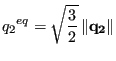

This procedure is used to calculate the eigenvalues and eigenmodes taking the Coriolis forces into account. The latter forces apply as soon as one performs calculations in a rotating frame of reference. Therefore, using the *DLOAD card to define a centrifugal speed in a *FREQUENCY step automatically triggers Coriolis forces. However, in a lot of applications the Coriolis forces are quite small and can be neglected. They may be important for very flexible rotating structures such as thin disks mounted on long rotating axes (rotor dynamics).
The presence of Coriolis forces changes the governing equation into
| (303) |
In a *FREQUENCY analysis the term with the Coriolis matrix is lacking. Now, the solution to the above equation is assumed to be a linear combination of the eigenmodes without Coriolis:
| (304) |
Substituting this assumption into the governing equation and premultiplying the equation with leads to
![$\displaystyle \sum_i b_i \begin{Bmatrix}U_j \end{Bmatrix}^T \begin{bmatrix}C \e...
...ix}U_i \end{Bmatrix} = \left[ \frac{\omega_j^2-\omega^2}{i \omega} \right] b_j.$](img1159.png) |
(305) |
Writing this equation for each value of  yields an eigenvalue problem of the form
| (306) |
This is a nonlinear eigenvalue problem which can be solved by a Newton-Raphson procedure. Starting values for the procedure are the eigenvalues of the *FREQUENCY step and some values in between. In rare cases an eigenvalue is missed (most often the last eigenvalue requested).
One can prove that the eigenvalues are real, the eigenmodes, however, are usually complex. Therefore, instead of requesting U underneath the *NODE FILE card yielding the real and imaginary part of the displacements it is rather instructive to request PU leading to the size and phase. With the latter information the mode can be properly visualized in CalculiX GraphiX.
Finally, notice that no *DLOAD card of type CORIO is needed in CalculiX. A loading of type CENTRIF in a preceding *STATIC step is sufficient. The usual procedure is indeed: